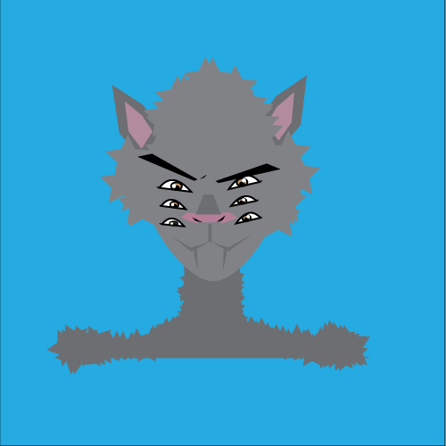

My character’s name is Norton and he looks like a half wolf half man with a horn. The more stressed he gets the more eyes he grows on his face. My character originates from a town called “rejects“. The place is hidden on earth and looks like a mix of green land and future architecture. It’s special because everyone here is the same species. My character’s environment is an elseworld version of NYC soho and has the sounds of constant noise. He only listens to Frank Sinatra and lives with Brad Pitt. His hometown is very far away and the area he lives in now is a very crowded city. The weather consists of always raining or really sunny. Norton has a skinny build and personality is a fake confident person. Inside he is very shy and insecure but tries to portray a fake version of himself to outsiders to seem like an extrovert person. He moves quick around people yet gets sad any chance he’s alone. He tries to cheer others up and never lets other people cheer him up. Norton has eyes that grow on his face when he gets stressed which is why he always puts up a front trying to act like everything is okay.
